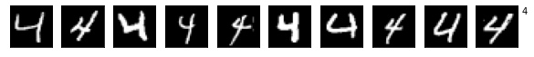

Almacenado y recuperación de modelos — 28:35 min
Última modificación: Mayo 5, 2021 | YouTube
Adaptado de:
En esta lección se explica como almacenar un modelo durante y al final del proceso de entrenamiento, y luego recuperarlo para su uso en productivo.
Importación de librerías
[1]:
import matplotlib.pyplot as plt
import tensorflow as tf
from tensorflow import keras
print(tf.__version__)
2.5.0
Carga y configuración del dataset MNIST
[2]:
#
# Esta es una base de datos de dígitos escritos
# a mano.
#
# https://www.tensorflow.org/api_docs/python/tf/keras/datasets/mnist
#
(train_images, train_labels), (
test_images,
test_labels,
) = tf.keras.datasets.mnist.load_data()
#
# Usa los primeros 1000 patrones de los conjuntos
# de entrenamiento y prueba
#
train_images = train_images[:1000]
train_labels = train_labels[:1000]
test_images = test_images[:1000]
test_labels = test_labels[:1000]
Downloading data from https://storage.googleapis.com/tensorflow/tf-keras-datasets/mnist.npz
11493376/11490434 [==============================] - 1s 0us/step
Visualización de las imágenes
[3]:
#
# Ejemplos de las figuras que contiene el dataset
#
def plot_mnist_examples(images, labels):
#
# Las figuras son de 28x28 pixels, y el
# color va enntre 0 y 255. Se realiza la
# normalización del color al rango [0, 1]
#
images = images / 255.0
data = [(img, lbl) for img, lbl in zip(images, labels)]
for i in range(10):
plt.figure(figsize=(10, 10))
x = [(img, lbl) for img, lbl in data if lbl == i]
for j in range(10):
plt.subplot(10, 10, i*10 + 1 + j)
plt.xticks([])
plt.yticks([])
plt.grid(False)
plt.imshow(1 - x[j][0], cmap=plt.cm.binary)
plt.text(30, 5, str(i))
plot_mnist_examples(train_images, train_labels)





Creación del modelo
[4]:
def create_model():
model = keras.models.Sequential(
[
#
# Esta capa reduce una dimension de la matriz de entrada.
# El conjunto de entrada es una lista de matrices de 28x28.
# Flatten genera una lista de vectores de dimensión 28x28
#
keras.layers.Flatten(input_shape=(28, 28)),
#
# Preprocesamiento de la entrada [0, 255] --> [0, 1]
#
keras.layers.experimental.preprocessing.Rescaling(scale=1.0 / 255),
#
# Capa (oculta) de procesamiento
#
keras.layers.Dense(
512,
activation="relu",
),
#
# Aleatoriamente fija elementos en cero
# para evitar el sobreentrenamiento
#
keras.layers.Dropout(0.2),
#
# Capa de salida
#
keras.layers.Dense(10),
]
)
model.compile(
optimizer="adam",
loss=tf.losses.SparseCategoricalCrossentropy(from_logits=True),
metrics=[tf.metrics.SparseCategoricalAccuracy()],
)
return model
#
# Crea una instancia del modelo
#
model = create_model()
#
# Arquitectura del modelo
#
model.summary()
Model: "sequential"
_________________________________________________________________
Layer (type) Output Shape Param #
=================================================================
flatten (Flatten) (None, 784) 0
_________________________________________________________________
rescaling (Rescaling) (None, 784) 0
_________________________________________________________________
dense (Dense) (None, 512) 401920
_________________________________________________________________
dropout (Dropout) (None, 512) 0
_________________________________________________________________
dense_1 (Dense) (None, 10) 5130
=================================================================
Total params: 407,050
Trainable params: 407,050
Non-trainable params: 0
_________________________________________________________________
Almacenamiento de los resultados parciales
[5]:
checkpoint_dir = "/tmp/training_1/"
checkpoint_path = checkpoint_dir + "cp.ckpt"
#
# Borra la carpeta si existe
#
!rm -rf {checkpoint_dir}
#
# Crea un callback para guardar los pesos del modelo
# durante y al final del entrenamiento
#
cp_callback = tf.keras.callbacks.ModelCheckpoint(
filepath=checkpoint_path,
save_weights_only=True,
verbose=1,
)
#
# Entrenamiento del modelo
#
_ = model.fit(
train_images,
train_labels,
epochs=10,
validation_data=(test_images, test_labels),
callbacks=[cp_callback],
)
Epoch 1/10
32/32 [==============================] - 1s 9ms/step - loss: 1.1525 - sparse_categorical_accuracy: 0.6620 - val_loss: 0.6959 - val_sparse_categorical_accuracy: 0.7820
Epoch 00001: saving model to /tmp/training_1/cp.ckpt
Epoch 2/10
32/32 [==============================] - 0s 5ms/step - loss: 0.4187 - sparse_categorical_accuracy: 0.8840 - val_loss: 0.5279 - val_sparse_categorical_accuracy: 0.8310
Epoch 00002: saving model to /tmp/training_1/cp.ckpt
Epoch 3/10
32/32 [==============================] - 0s 5ms/step - loss: 0.2951 - sparse_categorical_accuracy: 0.9210 - val_loss: 0.4716 - val_sparse_categorical_accuracy: 0.8510
Epoch 00003: saving model to /tmp/training_1/cp.ckpt
Epoch 4/10
32/32 [==============================] - 0s 5ms/step - loss: 0.2065 - sparse_categorical_accuracy: 0.9530 - val_loss: 0.4228 - val_sparse_categorical_accuracy: 0.8710
Epoch 00004: saving model to /tmp/training_1/cp.ckpt
Epoch 5/10
32/32 [==============================] - 0s 5ms/step - loss: 0.1509 - sparse_categorical_accuracy: 0.9740 - val_loss: 0.4183 - val_sparse_categorical_accuracy: 0.8660
Epoch 00005: saving model to /tmp/training_1/cp.ckpt
Epoch 6/10
32/32 [==============================] - 0s 5ms/step - loss: 0.1116 - sparse_categorical_accuracy: 0.9790 - val_loss: 0.4307 - val_sparse_categorical_accuracy: 0.8600
Epoch 00006: saving model to /tmp/training_1/cp.ckpt
Epoch 7/10
32/32 [==============================] - 0s 5ms/step - loss: 0.0936 - sparse_categorical_accuracy: 0.9870 - val_loss: 0.4250 - val_sparse_categorical_accuracy: 0.8640
Epoch 00007: saving model to /tmp/training_1/cp.ckpt
Epoch 8/10
32/32 [==============================] - 0s 5ms/step - loss: 0.0621 - sparse_categorical_accuracy: 0.9960 - val_loss: 0.4014 - val_sparse_categorical_accuracy: 0.8750
Epoch 00008: saving model to /tmp/training_1/cp.ckpt
Epoch 9/10
32/32 [==============================] - 0s 5ms/step - loss: 0.0474 - sparse_categorical_accuracy: 0.9960 - val_loss: 0.4063 - val_sparse_categorical_accuracy: 0.8700
Epoch 00009: saving model to /tmp/training_1/cp.ckpt
Epoch 10/10
32/32 [==============================] - 0s 4ms/step - loss: 0.0370 - sparse_categorical_accuracy: 1.0000 - val_loss: 0.4061 - val_sparse_categorical_accuracy: 0.8620
Epoch 00010: saving model to /tmp/training_1/cp.ckpt
[6]:
#
# Contenido del directorio
#
!ls -1 {checkpoint_dir}
checkpoint
cp.ckpt.data-00000-of-00001
cp.ckpt.index
Recuperación de los pesos almacenados en disco
[7]:
#
# Crea una nueva instancia del modelo
#
model = create_model()
#
# Métricas de la nueva instancia (modelo no entrenado)
# (loss, acc)
#
model.evaluate(test_images, test_labels, verbose=2)
32/32 - 0s - loss: 2.3716 - sparse_categorical_accuracy: 0.0650
[7]:
[2.371553659439087, 0.06499999761581421]
[8]:
#
# Lee los pesos almacenados en el disco duro
#
model.load_weights(checkpoint_path)
#
# Métricas de la nueva instancia con los
# pesos almacenados en disco
# (loss, acc)
#
model.evaluate(test_images, test_labels, verbose=2)
32/32 - 0s - loss: 0.4061 - sparse_categorical_accuracy: 0.8620
[8]:
[0.4060852527618408, 0.8619999885559082]
Personalización de los nombres de archivos y almacenamiento checkpoints
[9]:
#
# Se especifica una nueva carpeta para almacenar
# los resultados y se personaliza el nombre
#
checkpoint_dir = "/tmp/training_2/"
checkpoint_path = checkpoint_dir + "cp-{epoch:04d}.ckpt"
#
# Borra la carpeta si existe
#
!rm -rf {checkpoint_dir}
BATCH_SIZE = 32
cp_callback = tf.keras.callbacks.ModelCheckpoint(
filepath=checkpoint_path,
verbose=1,
save_weights_only=True,
#
# Salva el modelo cada 5 epochs
#
save_freq=5 * BATCH_SIZE,
)
#
# Crea una nueva instancia del modelo
#
model = create_model()
#
# Salva los pesos del modelo sin entrenar
#
model.save_weights(checkpoint_path.format(epoch=0))
#
# Entrenamiento del modelo
#
_ = model.fit(
train_images,
train_labels,
epochs=50,
batch_size=BATCH_SIZE,
callbacks=[cp_callback],
validation_data=(test_images, test_labels),
verbose=0,
)
Epoch 00005: saving model to /tmp/training_2/cp-0005.ckpt
Epoch 00010: saving model to /tmp/training_2/cp-0010.ckpt
Epoch 00015: saving model to /tmp/training_2/cp-0015.ckpt
Epoch 00020: saving model to /tmp/training_2/cp-0020.ckpt
Epoch 00025: saving model to /tmp/training_2/cp-0025.ckpt
Epoch 00030: saving model to /tmp/training_2/cp-0030.ckpt
Epoch 00035: saving model to /tmp/training_2/cp-0035.ckpt
Epoch 00040: saving model to /tmp/training_2/cp-0040.ckpt
Epoch 00045: saving model to /tmp/training_2/cp-0045.ckpt
Epoch 00050: saving model to /tmp/training_2/cp-0050.ckpt
[10]:
#
# Contenido del directorio
#
!ls -1 {checkpoint_dir}
checkpoint
cp-0000.ckpt.data-00000-of-00001
cp-0000.ckpt.index
cp-0005.ckpt.data-00000-of-00001
cp-0005.ckpt.index
cp-0010.ckpt.data-00000-of-00001
cp-0010.ckpt.index
cp-0015.ckpt.data-00000-of-00001
cp-0015.ckpt.index
cp-0020.ckpt.data-00000-of-00001
cp-0020.ckpt.index
cp-0025.ckpt.data-00000-of-00001
cp-0025.ckpt.index
cp-0030.ckpt.data-00000-of-00001
cp-0030.ckpt.index
cp-0035.ckpt.data-00000-of-00001
cp-0035.ckpt.index
cp-0040.ckpt.data-00000-of-00001
cp-0040.ckpt.index
cp-0045.ckpt.data-00000-of-00001
cp-0045.ckpt.index
cp-0050.ckpt.data-00000-of-00001
cp-0050.ckpt.index
Recuperación de los pesos a partir de un checkpoint
[11]:
#
# Es posible obtener el nombre del ultimo checkpoint
#
latest = tf.train.latest_checkpoint(checkpoint_dir)
latest
[11]:
'/tmp/training_2/cp-0050.ckpt'
[12]:
#
# Crea una nueva instancia del modelo
#
model = create_model()
#
# Carga los pesos almacenados en el ultimo checkpoint
#
model.load_weights(latest)
#
# Métricas de la nueva instancia con los pesos almacenados
# en el checkpoint (loss, acc)
#
model.evaluate(test_images, test_labels, verbose=2)
32/32 - 0s - loss: 0.4935 - sparse_categorical_accuracy: 0.8730
[12]:
[0.4935464560985565, 0.8730000257492065]
Almacenamiento y recuperación manual de los pesos de un modelo
[13]:
#
# Salva los pesos a una carpeta
# (borra la carpeta si existe)
#
!rm -rf /tmp/checkpoints
model.save_weights("/tmp/checkpoints/my_checkpoint")
#
# Crea una nueva instancia del modelo
#
model = create_model()
#
# Carga los pesos
#
model.load_weights("/tmp/checkpoints/my_checkpoint")
#
# Métricas de evaluación
#
model.evaluate(test_images, test_labels, verbose=2)
32/32 - 0s - loss: 0.4935 - sparse_categorical_accuracy: 0.8730
[13]:
[0.4935464560985565, 0.8730000257492065]
Almacenamiento manual del modelo completo con SaveModel
[14]:
#
# Crea una nueva instancia del modelo
#
model = create_model()
#
# Entrenamiento
#
model.fit(train_images, train_labels, epochs=5,)
#
# Crea la carpeta para almacenar el modelo
#
!mkdir -p /tmp/saved_complete_model/
#
# Salva el modelo
#
!rm -rf /tmp/saved_complete_model/
model.save("/tmp/saved_complete_model/my_model")
Epoch 1/5
WARNING:tensorflow:Unresolved object in checkpoint: (root).optimizer.iter
WARNING:tensorflow:Unresolved object in checkpoint: (root).optimizer.beta_1
WARNING:tensorflow:Unresolved object in checkpoint: (root).optimizer.beta_2
WARNING:tensorflow:Unresolved object in checkpoint: (root).optimizer.decay
WARNING:tensorflow:Unresolved object in checkpoint: (root).optimizer.learning_rate
WARNING:tensorflow:A checkpoint was restored (e.g. tf.train.Checkpoint.restore or tf.keras.Model.load_weights) but not all checkpointed values were used. See above for specific issues. Use expect_partial() on the load status object, e.g. tf.train.Checkpoint.restore(...).expect_partial(), to silence these warnings, or use assert_consumed() to make the check explicit. See https://www.tensorflow.org/guide/checkpoint#loading_mechanics for details.
WARNING:tensorflow:Unresolved object in checkpoint: (root).optimizer.iter
WARNING:tensorflow:Unresolved object in checkpoint: (root).optimizer.beta_1
WARNING:tensorflow:Unresolved object in checkpoint: (root).optimizer.beta_2
WARNING:tensorflow:Unresolved object in checkpoint: (root).optimizer.decay
WARNING:tensorflow:Unresolved object in checkpoint: (root).optimizer.learning_rate
WARNING:tensorflow:A checkpoint was restored (e.g. tf.train.Checkpoint.restore or tf.keras.Model.load_weights) but not all checkpointed values were used. See above for specific issues. Use expect_partial() on the load status object, e.g. tf.train.Checkpoint.restore(...).expect_partial(), to silence these warnings, or use assert_consumed() to make the check explicit. See https://www.tensorflow.org/guide/checkpoint#loading_mechanics for details.
32/32 [==============================] - 1s 3ms/step - loss: 1.1571 - sparse_categorical_accuracy: 0.6680
Epoch 2/5
32/32 [==============================] - 0s 3ms/step - loss: 0.4406 - sparse_categorical_accuracy: 0.8710
Epoch 3/5
32/32 [==============================] - 0s 3ms/step - loss: 0.2781 - sparse_categorical_accuracy: 0.9300
Epoch 4/5
32/32 [==============================] - 0s 3ms/step - loss: 0.2267 - sparse_categorical_accuracy: 0.9420
Epoch 5/5
32/32 [==============================] - 0s 2ms/step - loss: 0.1641 - sparse_categorical_accuracy: 0.9650
INFO:tensorflow:Assets written to: /tmp/saved_complete_model/my_model/assets
[15]:
#
# Contenido de la carpeta
#
!ls /tmp/saved_complete_model/
my_model
[16]:
#
# Contenido de la carpeta
#
!ls /tmp/saved_complete_model/my_model
assets keras_metadata.pb saved_model.pb variables
[17]:
#
# Carga el modelo desde el disco
#
new_model = tf.keras.models.load_model("/tmp/saved_complete_model/my_model")
#
# Resumen
#
new_model.summary()
Model: "sequential_5"
_________________________________________________________________
Layer (type) Output Shape Param #
=================================================================
flatten_5 (Flatten) (None, 784) 0
_________________________________________________________________
rescaling_5 (Rescaling) (None, 784) 0
_________________________________________________________________
dense_10 (Dense) (None, 512) 401920
_________________________________________________________________
dropout_5 (Dropout) (None, 512) 0
_________________________________________________________________
dense_11 (Dense) (None, 10) 5130
=================================================================
Total params: 407,050
Trainable params: 407,050
Non-trainable params: 0
_________________________________________________________________
[18]:
#
# Métricas
#
new_model.evaluate(test_images, test_labels, verbose=2)
32/32 - 0s - loss: 0.4127 - sparse_categorical_accuracy: 0.8710
[18]:
[0.41273897886276245, 0.8709999918937683]
[19]:
#
# Evalua el conjunto de test con el modelo
# cargado de disco
#
new_model.predict(test_images).shape
[19]:
(1000, 10)
Almacenamiento del modelo completo en HDF5
[20]:
#
# Crea una nueva instancia del modelo
#
model = create_model()
#
# Entrenamiento del modelo
#
model.fit(train_images, train_labels, epochs=5,)
#
# Salva el modelo en formato HDF5
#
model.save("/tmp/my_model.h5")
Epoch 1/5
32/32 [==============================] - 0s 3ms/step - loss: 1.1942 - sparse_categorical_accuracy: 0.6550
Epoch 2/5
32/32 [==============================] - 0s 3ms/step - loss: 0.4457 - sparse_categorical_accuracy: 0.8700
Epoch 3/5
32/32 [==============================] - 0s 3ms/step - loss: 0.2768 - sparse_categorical_accuracy: 0.9350
Epoch 4/5
32/32 [==============================] - 0s 3ms/step - loss: 0.2119 - sparse_categorical_accuracy: 0.9520
Epoch 5/5
32/32 [==============================] - 0s 3ms/step - loss: 0.1554 - sparse_categorical_accuracy: 0.9610
[21]:
#
# Crea un nuevo modelo a partir de la información
# almacenada en disco
#
new_model = tf.keras.models.load_model("/tmp/my_model.h5")
#
# Resumen del modelo
#
new_model.summary()
Model: "sequential_6"
_________________________________________________________________
Layer (type) Output Shape Param #
=================================================================
flatten_6 (Flatten) (None, 784) 0
_________________________________________________________________
rescaling_6 (Rescaling) (None, 784) 0
_________________________________________________________________
dense_12 (Dense) (None, 512) 401920
_________________________________________________________________
dropout_6 (Dropout) (None, 512) 0
_________________________________________________________________
dense_13 (Dense) (None, 10) 5130
=================================================================
Total params: 407,050
Trainable params: 407,050
Non-trainable params: 0
_________________________________________________________________
[22]:
#
# Métricas de precisión
#
new_model.evaluate(test_images, test_labels, verbose=2)
32/32 - 0s - loss: 0.4287 - sparse_categorical_accuracy: 0.8490
[22]:
[0.428665429353714, 0.8489999771118164]